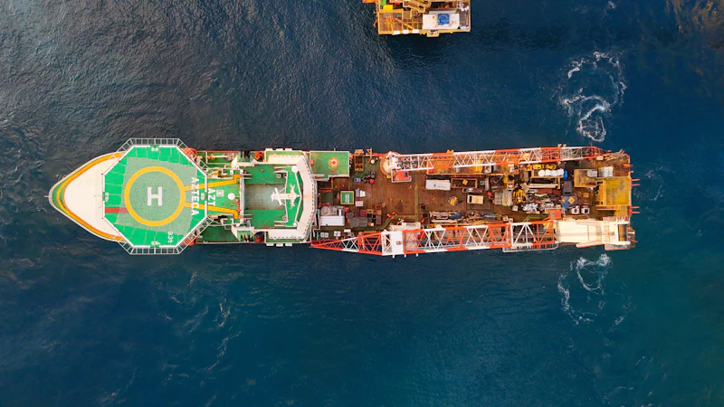
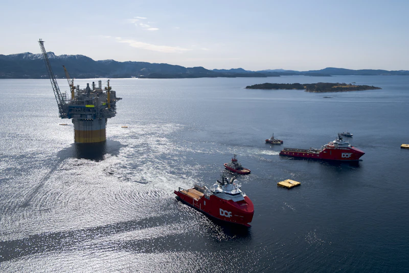

Articles
Notes on energy & industrial transformation.
Digital transformation in energy, AI in oil and gas, marine operations, enterprise systems and technology strategy, with a focus on Nigeria and Africa.
Published
Latest articles
Loading published articles…
No articles have been published yet. The first pieces are being written. See the topics in preparation below.
In preparation
Topics I am writing about.
These are draft topics, not published articles. They will appear above as each piece is completed.
-
Digital transformation in energy starts with operations, not software
Why the most valuable technology projects begin with mapping how assets, people and approvals actually move.
-
Where AI genuinely fits in oil and gas workflows
Document intelligence, reporting and decision support: separating practical use from hype.
-

From paper files to compliance systems in marine operations
What it takes to digitize equipment compliance records that people rely on every day.
-

Following the information across the energy value chain
How data moves (and stalls) between upstream operations, services and support functions.
-
Operating systems for operational businesses
Why connecting operations and finance in one workflow matters more than adding another tool.
-
Digital innovation across Nigeria's energy sector
Opportunities for practical, locally grounded technology across upstream, midstream and services.